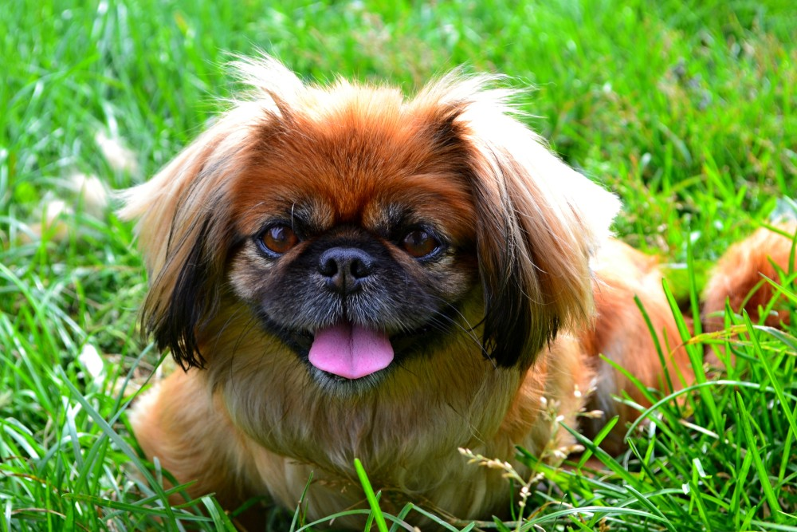

Pochodzenie:
- Pekiniec, znany również jako Pekiński Pies Pałacowy, wywodzi się z Chin.
- Był faworytem w chińskich pałacach i miał znaczenie kulturowe jako pies towarzyszący chińskiej arystokracji.
Wygląd Fizyczny:
- Pekiniec to mały pies o krągłym ciele i krótkich kończynach.
- Charakteryzuje go krótka, puszysta sierść i krągła główka z krótkim nosem.
Kolor Sierści:
- Sierść pekinczyka występuje w różnych kolorach, w tym rudo-białym, czarnym, kremowym i pręgowanym.
Charakter i Temperament:
- Pekiniecy są urocze, pewne siebie i bardzo oddane swoim właścicielom.
- Są znane ze swojej niezależności, ale jednocześnie chętnie spędzają czas w towarzystwie ludzi.
Aktywność Fizyczna:
- Mimo swojej niewielkiej wielkości, pekinczyki potrzebują regularnej, łagodnej aktywności fizycznej.
Zastosowanie:
- Pekiniec to doskonały towarzysz domowy, idealny dla osób poszukujących małego psa o uroczym wyglądzie.
Hodowla i Popularność:
- Hodowla pekinczyków skupia się na utrzymaniu ich charakterystycznych cech, a rasa cieszy się popularnością jako pies towarzyszący.